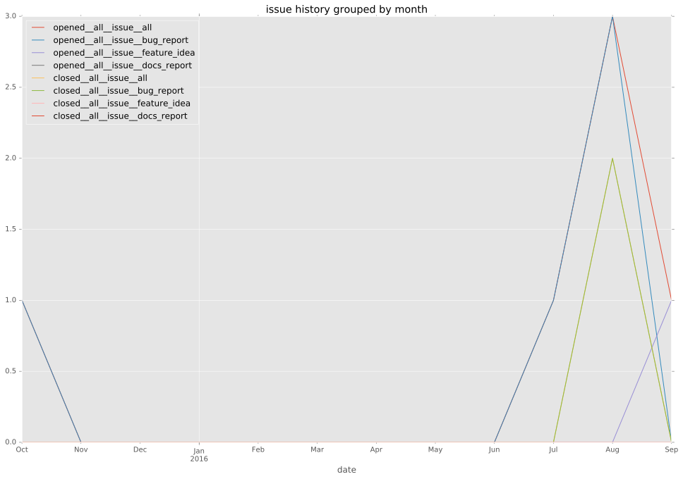

total issue counts
bugfix pull request: 5
pullrequest: 9
feature pull request: 4
feature idea: 2
issue: 4
bug report: 2
issue history

days open by issue type
feature pull request
count: 1
std: nan
min: 152
max: 152
median: 152.0
mean: 152.0
all
count: 4
std: 76.0
min: 0
max: 152
median: 0.0
mean: 38.0
pullrequest
count: 0
std: nan
min: nan
max: nan
median: nan
mean: nan
bugfix pull request
count: 3
std: 0.0
min: 0
max: 0
median: 0.0
mean: 0.0
feature idea
count: 0
std: nan
min: nan
max: nan
median: nan
mean: nan
issue
count: 0
std: nan
min: nan
max: nan
median: nan
mean: nan
bug report
count: 0
std: nan
min: nan
max: nan
median: nan
mean: nan
closures grouped by total days open